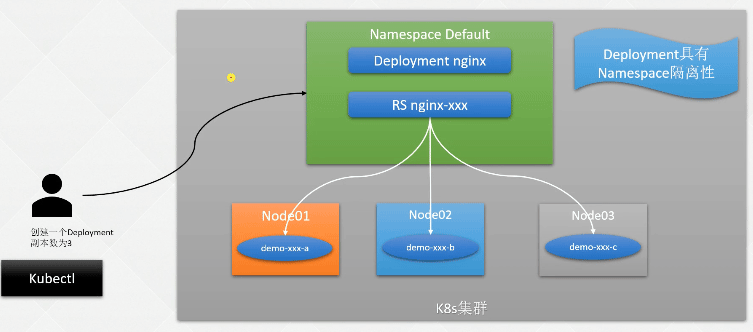
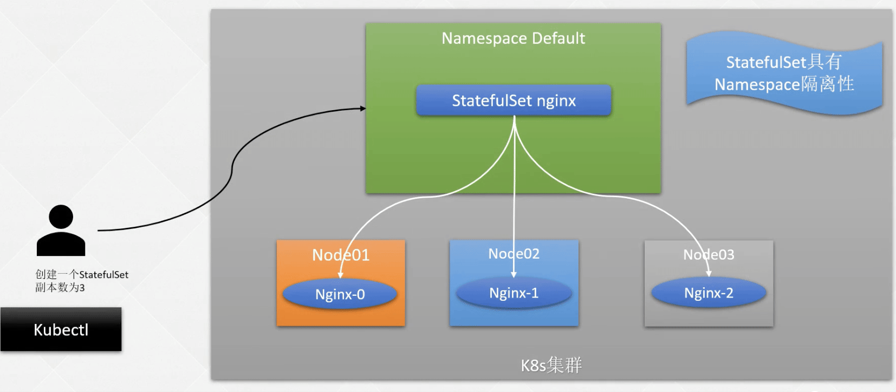
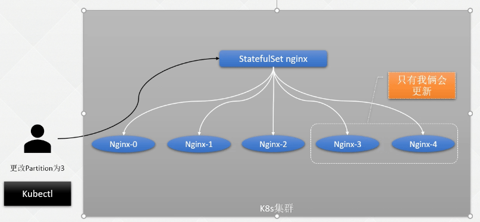
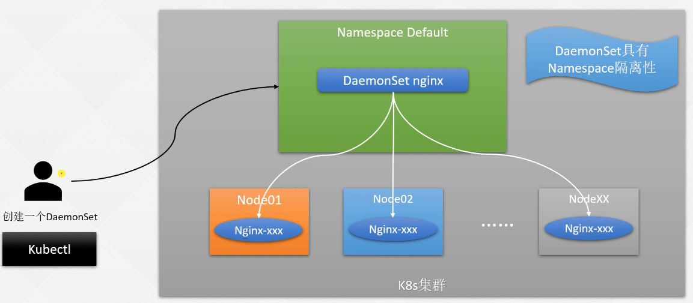

k8s 基础篇-工作负载
- TAGS: Kubernetes
k8s基础篇-工作负载
Replication Controller 和 ReplicaSet
Replication Controller（复制控制器，RC）和 ReplicaSet （复制集，RS） 是两种简单部署 Pod 的方式。因为在生产环境中，主要使用更高级的 Deployment 等方式进行 Pod 的管理和部署，所以只需要了解就行。
Replication Controller
Replication Controller（简称 RC）可确保 Pod 副本数达到期望值，也就是 RC 定义的数量。换句话说，Replication Controller 可确保一个 Pod 或一组同类 Pod 总是可用。
如果存在的 Pod 大于设定的值，则 Replication Controller 将终止额外的 Pod。如果太小，Replication Controller 将启动更多的 Pod 用于保证达到期望值。与手动创建 Pod 不同的是，用Replication Controller 维护的 Pod 在失败、删除或终止时会自动替换。因此即使应用程序只需要一个 Pod，也应该使用 Replication Controller 或其他方式管理。Replication Controller 类似于进程管理程序，但是 Replication Controller 不是监视单个节点上的各个进程，而是监视多个节点上的多个 Pod。
定义一个 Replication Controller 的示例如下。
apiVersion: v1
kind: ReplicationController
metadata:
name: nginx
spec:
replicas: 3
selector:
app: nginx
template:
metadata:
name: nginx
labels:
app: nginx
spec:
containers:
- name: nginx
image: nginx
ports:
- containerPort: 80
ReplicaSet
ReplicaSet 是支持基于集合的 标签 选择器的下一代 Replication Controller，它主要用作Deployment 协调创建、删除和更新 Pod，和 Replication Controller 唯一的区别是，ReplicaSet 支持标签选择器。在实际应用中，虽然 ReplicaSet 可以单独使用，但是一般建议使用 Deployment 来自动管理 ReplicaSet，除非自定义的 Pod 不需要更新或有其他编排等。
定义一个 ReplicaSet 的示例如下：
apiVersion: apps/v1
kind: ReplicaSet
metadata:
name: frontend
labels:
app: guestbook
tier: frontend
spec:
# modify replicas according to your case
replicas: 3
selector:
matchLabels:
tier: frontend
matchExpressions:
- {key: tier, operator: In, values: [frontend]}
template:
metadata:
labels:
app: guestbook
tier: frontend
spec:
containers:
- name: php-redis
image: gcr.io/google_samples/gb-frontend:v3
resources:
requests:
cpu: 100m
memory: 100Mi
env:
- name: GET_HOSTS_FROM
value: dns
# If your cluster config does not include a dns service, then to
# instead access environment variables to find service host
# info, comment out the 'value: dns' line above, and uncomment the
# line below.
# value: env
ports:
- containerPort: 80
Replication Controller 和 ReplicaSet 的创建删除和 Pod 并无太大区别，Replication Controller 目前几乎已经不在生产环境中使用，ReplicaSet 也很少单独被使用，都是使用更高级的资源 Deployment、DaemonSet、StatefulSet 进行管理 Pod。
Deployment
无状态资源管理 Deployment
用于部署无状态的服务，这个最常用的控制器，因为企业内部现在都是以微服务为主，而微服务实现无状态化是最佳实践，可以利用 Deployment 的高级功能做无缝迁移、自动扩缩容、自动灾难恢复、一键回滚等功能。
Deployment 部署过程

3 副本 deployment 提交给 apiserver
创建一个Deployment
手动创建
kubectl create deploy nginx --image=nginx:1.15.12 --replicas=2 -oyaml --dry-run=client >nginx-deploy.yaml
使用文件创建
# 查看手动创建的nginx的yaml文件,然后把f开头的删了,且删了最后的status标签的内容，得到下面的yaml文件 [root@k8s-master01 ~]# kubectl get deployment nginx -o yaml > nginx-deploy.yaml
cat > nginx-deploy.yaml << EFO apiVersion: apps/v1 kind: Deployment metadata: labels: app: nginx name: nginx namespace: default spec: progressDeadlineSeconds: 600 replicas: 2 revisionHistoryLimit: 10 selector: matchLabels: app: nginx strategy: rollingUpdate: maxSurge: 25% maxUnavailable: 25% type: RollingUpdate template: metadata: labels: app: nginx spec: containers: - image: nginx:1.15.12 imagePullPolicy: IfNotPresent name: nginx ports: - containerPort: 80 restartPolicy: Always terminationGracePeriodSeconds: 30 EFO
PS: 从 Kubernetes 1.16 版本开始，彻底废弃了其他的 APIVersion，只能使用 apps/v1，1.16 以下的版本可以使用 extension 等。
示例解析：
- nginx：Deployment 的名称；
- replicas： 创建 Pod 的副本数；
- selector：定义 Deployment 如何找到要管理的Pod，与 template 的 label（标签）对应，apiVersion 为apps/v1 必须指定该字段；
- template 字段包含以下字段：
- app：nginx 使用 label（标签）标记 Pod；
- spec：表示 Pod 运行一个名字为 nginx 的容器；
- image：运行此 Pod 使用的镜像；
- ports：容器用于发送和接收流量的端口。
- app：nginx 使用 label（标签）标记 Pod；
- revisionHistoryLimit: 10 历史记录保留的个数
- terminationGracePeriodSeconds: deployment 更新时 pod 被 Terminating 时等待时间。
# 使用以下命令去新建一个deployment [root@k8s-master01 ~]# kubectl replace -f nginx-deploy.yaml deployment.apps/nginx replaced # 在线更改yaml，管理deployment ---把副本数改为2 [root@k8s-master01 ~]# kubectl edit deploy nginx # 查看是否生成2个副本 [root@k8s-master01 ~]# kubectl get po NAME READY STATUS RESTARTS AGE nginx-66bbc9fdc5-c6l6t 1/1 Running 0 57s nginx-66bbc9fdc5-hsv4d 1/1 Running 0 34m
Deployment启动后会启动ReplicaSet，ReplicaSet的名称是temple模板的哈希值，而基于ReplicaSet启动的Pod资源的名称是ReplicaSet名称+随机数。
状态解析
使用 kubectl get 或者 kubectl describe 查看此 Deployment 的状态：
$ kubectl get deploy NAME READY UP-TO-DATE AVAILABLE AGE nginx 0/2 2 0 8s
- NAME：集群中Deployment的名称；
- READY：Pod就绪个数和总副本数；
- UP-TO-DATE：显示已达到期望状态的被更新的副本数；
- AVAILABLE：显示用户可以使用的应用程序副本数，当前为0，说明目前还没有达到期望的Pod；
- AGE：显示应用程序运行的时间。
可以使用 rollout 命令查看整个 Deployment 创建的状态:
$ kubectl rollout status deployment/nginx
deployment "nginx" successfully rolled out
当 rollout 结束时，再次查看此 Deployment，可以看到 AVAILABLE 的数量和 yaml 文件中
定义的 replicas 相同：
$ kubectl get deploy NAME READY UP-TO-DATE AVAILABLE AGE nginx 2/2 2 2 17m
查看此 Deployment 当前对应的 ReplicaSet：
$ kubectl get rs -l app=nginx NAME DESIRED CURRENT READY AGE nginx-74695fdcd 2 2 2 21m
- DESIRED：应用程序副本数；
- CURRENT：当前正在运行的副本数；
当 Deployment 有过更新，对应的 RS 可能不止一个，可以通过 `-o yaml` 获取当前对应的 RS 是哪个，其余的 RS 为保留的历史版本，用于回滚等操作。
查看此 Deployment 创建的 Pod，可以看到 Pod 的 hash 值 和上述 Deployment 对应的 ReplicaSet 的 hash 值一致：
$ kubectl get pods --show-labels NAME READY STATUS RESTARTS AGE LABELS nginx-74695fdcd-kkx89 1/1 Running 0 23m app=nginx,pod-template-hash=74695fdcd nginx-74695fdcd-sp2tk 1/1 Running 0 23m app=nginx,pod-template-hash=74695fdcd
`-owide` 获得更多的状态
$ kubectl get po -owide NAME READY STATUS RESTARTS AGE IP NODE NOMINATED NODE READINESS GATES ludo-game-server-68484555bd-tjcx2 2/2 Running 0 13d 10.204.55.22 ip-10-204-54-46.ap-south-1.compute.internal <none> <none> ludo-gateway-5fddb7cb85-n98pt 2/2 Running 0 15d 10.204.41.106 ip-10-204-45-143.ap-south-1.compute.internal <none> 1/1 ludo-gateway-5fddb7cb85-s27rf 2/2 Running 0 15d 10.204.55.113 ip-10-204-54-46.ap-south-1.compute.internal <none> 1/1
Deployment的更新
更新方式：
当且仅当 Deployment 的 Pod 模板（即.spec.template）更改时，才会触发 Deployment 更新，例如更改内存、CPU 配置或者容器的 image。
假如更新 Nginx Pod 的 image 使用 nginx:latest，并使用 `–record` 记录当前更改的参数，后期回滚时可以查看到对应的信息：
$ kubectl set image deployment nginx nginx=nginx:1.9.1 --record
deployment.extensions/nginx-deployment image updated
也可以使用 edit 命令直接编辑 Deployment，效果相同：
kubectl edit deployment.v1.apps/nginx
查看更新过程
更新过程：新建 RS ，根据更新策略更新，旧 pod 缩减，新 pod 扩容。
可以使用 kubectl rollout status 查看更新过程：
[root@k8s-master01 ~]# kubectl rollout status deploy nginx Waiting for deployment "nginx" rollout to finish: 1 out of 3 new replicas have been updated... # 或者使用describe查看 [root@k8s-master01 ~]# kubectl describe deploy nginx
rollout 中可以看出更新过程为新旧交替更新，首先新建一个 Pod，当 Pod 状态为 Running 时，删除一个旧的 Pod，同时再创建一个新的 Pod。当触发一个更新后，会有新的 ReplicaSet 产生，旧的ReplicaSet 会被保存，查看此时 ReplicaSet，可以从 AGE 或 READY 看出来新旧 ReplicaSet：
在 describe 中可以看出，第一次创建时，它创建了一个名为 nginx-xxxx 的 ReplicaSet，并直接将其扩展为 2 个副本。更新部署时，它创建了一个新的 ReplicaSet，命名为 nginx-xxxxx，并将其副本数扩展为 1，然后将旧的 ReplicaSet 缩小为 1，这样至少可以有 1 个 Pod 可用，最多创建了 3 个 Pod。以此类推，使用相同的滚动更新策略向上和向下扩展新旧 ReplicaSet，最终新的 ReplicaSet 可以拥有 2 个副本，并将旧的 ReplicaSet 缩小为 0。
Deployment 的回滚
回滚到上一个版本
# 例如错误的更新到了一个xxx版本 [root@k8s-master01 ~]# kubectl set image deploy nginx nginx=nginx:xxx --record deployment.apps/nginx image updated # 使用 kubectl rollout history 查看更新历史： [root@k8s-master01 ~]# kubectl rollout history deploy nginx deployment.apps/nginx REVISION CHANGE-CAUSE 1 <none> 2 kubectl set image deploy nginx nginx=nginx:1.15.3 --record=true 3 kubectl set image deploy nginx nginx=nginx:xxx --record=true # 查看 Deployment 某次更新的详细信息，使用--revision 指定某次更新版本号： kubectl rollout history deployment/nginx --revision=3 [root@k8s-master01 ~]# kubectl rollout history deploy nginx --revision=4 deployment.apps/nginx with revision #4 Pod Template: Labels: app=nginx pod-template-hash=5dfc8689c6 Annotations: kubernetes.io/change-cause: kubectl set image deploy nginx nginx=nginx:1.15.3 --record=true Containers: nginx: Image: nginx:1.15.3 Port: <none> Host Port: <none> Environment: <none> Mounts: <none> Volumes: <none> # 回滚到上一个版本 [root@k8s-master01 ~]# kubectl rollout undo deploy nginx deployment.apps/nginx rolled back
回滚到指定版本
如果要回滚到指定版本，使用 `–to-revision` 参数：
# 回滚到指定版本 [root@k8s-master01 ~]# kubectl rollout undo deploy nginx --to-revision=4 deployment.apps/nginx rolled back
在kubernetes中滚动重启pod常用方法：
1.直接修改pod的yaml部署文件，apply滚动更新（基于yaml文件）
通过 "kubectl apply -f *.yaml" 命令触发pod的滚动更新。前提是pod的yaml部署文件内容必须是有所更新的，否则执行kubectl apply命令不会触发pod的滚动更新。
2.通过set image命令滚动更新（基于image镜像）
如果不想直接修改pod的yaml文件内容，就通过 "kubectl set image deployment deployment_name pod_name=new_image_name" 命令来滚动更新重启pod。
3.rollout restart方式滚动更新
1）在 k8s v1.15 版本之前，通过修改 annotations 的变量值可实现滚动重启 Pod ，当然这个方法其实更改了 yaml 文件，不过是更改的自定义变量字段通过时间戳的方式来设置值，一般不会对 Pod 主要内容有影响：
#+end_srcbash
"{\"spec\":{\"template\":{\"metadata\":{\"annotations\":{\"date\":\"`date +'%s'`\"}}}}}"
#+end_src
2）在 k8s v1.15 版本之后，通过 kubectl rollout restart 命令来滚动重启pod：
#+end_srcbash
#+end_src
Deployment的扩容与缩容
使用 `kubectl scale` 动态调整 Pod 的副本数
# Deployment的扩容与缩容，不会生成新的rs $ kubectl scale --replicas=4 deploy nginx deployment.apps/nginx scaled
- `–replicas` 指定副本数
查看 pod
$ kubectl get pod
Deployment的暂停和恢复
大多数情况下可能需要针对一个资源文件更改多处地方，而并不需要多次触发更新，此时可以使用 Deployment 暂停功能，临时禁用更新操作，对 Deployment 进行多次修改后在进行更新。
- deployment可以在线edit更改（可以一次性更改多个）
- 也可以用kubectl set image更改（也可以一次性更改多个，但是需要使用到Deployment的暂停和恢复功能）
Deployment 暂停功能
使用 `kubectl rollout pause` 命令即可暂停 Deployment 更新：
# 暂停 [root@k8s-master01 ~]# kubectl rollout pause deployment nginx deployment.apps/nginx paused
然后对 Deployment 进行相关更新操作，比如先更新镜像，然后对其资源进行限制（如果使用的是 kubectl edit 命令，可以直接进行多次修改，无需暂停更新，kubectlset 命令一般会集成在CICD 流水线中）：
# 第一次更新 [root@k8s-master01 ~]# kubectl set image deploy nginx nginx=nginx:1.15.4 --record deployment.apps/nginx image updated # 第二次更新、添加内存、CPU [root@k8s-master01 ~]# kubectl set resources deploy nginx -c nginx --limits=cpu=200m,memory=128Mi --requests=cpu=10m,memory=16Mi deployment.apps/nginx resource requirements updated # 查看被更改以后的nginx镜像的deployment [root@k8s-master01 ~]# kubectl get deploy nginx -oyaml
Deployment 恢复功能
进行完最后一处配置更改后，使用 `kubectl rollout resume` 恢复 Deployment 更新：
# 更新完想更新的内容后，然后恢复镜像 [root@k8s-master01 ~]# kubectl rollout resume deploy nginx deployment.apps/nginx resumed # 查看rs，看到有新的 [root@k8s-master01 ~]# kubectl get rs NAME DESIRED CURRENT READY AGE nginx-5b6bc78b67 1 1 0 41s
Deployment注意事项
- 历史版本清理策略：
- 在默认情况下，revision 保留 10 个旧的 ReplicaSet，其余的将在后台进行垃圾回收，可以在.spec.revisionHistoryLimit 设置保留 ReplicaSet 的个数。当设置为 0 时，不保留历史记录。
- 在默认情况下，revision 保留 10 个旧的 ReplicaSet，其余的将在后台进行垃圾回收，可以在.spec.revisionHistoryLimit 设置保留 ReplicaSet 的个数。当设置为 0 时，不保留历史记录。
- 更新策略：
- .spec.strategy.type==Recreate，表示重建，先删掉旧的Pod再创建新的Pod；
- .spec.strategy.type==RollingUpdate， 默认，表示滚动更新，可以指定maxUnavailable和maxSurge
- .spec.strategy.type==Recreate，表示重建，先删掉旧的Pod再创建新的Pod；
来控制滚动更新过程；
- .spec.strategy.rollingUpdate.maxUnavailable，指定在回滚更新时最大不可用的Pod数量，可选字段，默认为25%，可以设置为数字或百分比，如果maxSurge为0，则该值不能为0；
- .spec.strategy.rollingUpdate.maxSurge 可以超过期望值的最大Pod数，可选字段，默认为25%，可以设置成数字或百分比，如果maxUnavailable为0，则该值不能为0。
- Ready 策略：
- .spec.minReadySeconds 是可选参数，指定新创建的 Pod 应该在没有任何容器崩溃的情况下视为 Ready（就绪）状态的最小秒数，默认为 0，即一旦被创建就视为可用，通常和容器探针连用。
- .spec.minReadySeconds 是可选参数，指定新创建的 Pod 应该在没有任何容器崩溃的情况下视为 Ready（就绪）状态的最小秒数，默认为 0，即一旦被创建就视为可用，通常和容器探针连用。
StatefulSet
什么是StatefulSet
StatefulSet（有状态集，缩写为sts）常用于部署有状态的且需要有序启动的应用程序，比如在进行SpringCloud项目容器化时，Eureka的部署是比较适合用StatefulSet部署方式的，可以给每个Eureka实例创建一个唯一且固定的标识符，并且每个Eureka实例无需配置多余的Service，其余Spring Boot应用可以直接通过Eureka的Headless Service即可进行注册。
- Eureka 集群
- MongoDB
- ElasticSearch
- Redis
- Kafka
- 其它需要具有状态的服务
- 需要稳定的独一无二的网络标识符
- 需要持久化数据
- 需要有序的、优雅的部署和扩展
- 需要有序的自动滚动更新
#+end_src
Eureka的statefulset的资源名称是eureka，eureka-0 eureka-1 eureka-2
Service：headless service，没有ClusterIP eureka-svc
Eureka-0.eureka-svc.NAMESPACE_NAME eureka-1.eureka-svc
#+end_src
StatefuSet 部署过程

Headless Service
和Deployment类似，一个StatefulSet也同样管理着基于相同容器规范的Pod。不同的是，StatefulSet为每个Pod维护了一个粘性标识。
这些Pod是根据相同的规范创建的，但是不可互换，每个Pod都有一个持久的标识符，在重新调度时也会保留，一般格式为StatefulSetName-Number。比如定义一个名字是Redis-Sentinel的StatefulSet，指定创建三个Pod，那么创建出来的Pod名字就为Redis-Sentinel-0、Redis-Sentinel-1、Redis-Sentinel-2。
而 StatefulSet 创建的 Pod 一般使用 Headless Service（无头服务）进行通信，和普通的Service的区别在于 Headless Service 没有 ClusterIP，它使用的是Endpoint进行互相通信，Headless一般的格式为：
`statefulSetName-{0..N-1}.serviceName.namespace.svc.cluster.local。`
说明：Headless Service 需要提前创建
- serviceName为Headless Service的名字，创建StatefulSet时，必须指定Headless Service名称；
- 0..N-1为Pod所在的序号，从0开始到N-1；
- statefulSetName为StatefulSet的名字；
- namespace为服务所在的命名空间；
- cluster.local为Cluster Domain（集群域）。
假如公司某个项目需要在Kubernetes中部署一个主从模式的Redis，此时使用StatefulSet部署就极为合适，因为StatefulSet启动时，只有当前一个容器完全启动时，后一个容器才会被调度，并且每个容器的标识符是固定的，那么就可以通过标识符来断定当前Pod的角色。
比如用一个名为redis-ms的StatefulSet部署主从架构的Redis，第一个容器启动时，它的标识符为redis-ms-0，并且Pod内主机名也为redis-ms-0，此时就可以根据主机名来判断，当主机名为redis-ms-0的容器作为Redis的主节点，其余从节点，那么Slave连接Master主机配置就可以使用不会更改的Master的Headless Service，此时Redis从节点（Slave）配置文件如下：
port 6379
slaveof redis-ms-0.redis-ms.public-service.svc.cluster.local 6379
tcp-backlog 511
timeout 0
tcp-keepalive 0
…
其中redis-ms-0.redis-ms.public-service.svc.cluster.local是Redis Master的Headless Service，在同一命名空间下只需要写redis-ms-0.redis-ms即可，后面的public-service.svc.cluster.local可以省略。
StatefulSet注意事项
一般StatefulSet用于有以下一个或者多个需求的应用程序：
- 需要稳定的独一无二的网络标识符
- 需要持久化数据
- 需要有序的、优雅的部署和扩展
需要有序的自动滚动更新
如果应用程序不需要任何稳定的标识符或者有序的部署、删除或者扩展，应该使用无状态的控制器部署应用程序，比如Deployment或者ReplicaSet
StatefulSet是Kubernetes 1.9版本之前的beta资源，在1.5版本之前的任何Kubernetes版本都没有
Pod所用的存储必须由PersistentVolume Provisioner（持久化卷配置器）根据请求配置StorageClass，或者由管理员预先配置，当然也可以不配置存储
为了确保数据安全，删除和缩放StatefulSet不会删除与StatefulSet关联的卷，可以手动选择性地删除PVC和PV
StatefulSet目前使用Headless Service（无头服务）负责Pod的网络身份和通信，需要提前创建此服务
删除一个StatefulSet时，不保证对Pod的终止，要在StatefulSet中实现Pod的有序和正常终止，可以在删除之前将StatefulSet的副本缩减为0
定义一个StatefulSet资源文件
定义一个简单的StatefulSet的示例
官方文档：https://kubernetes.io/zh-cn/docs/concepts/workloads/controllers/statefulset/
cat > nginx-sts.yaml << EFO apiVersion: v1 kind: Service metadata: name: nginx labels: app: nginx spec: ports: - port: 80 name: web clusterIP: None selector: app: nginx --- apiVersion: apps/v1 kind: StatefulSet metadata: name: web spec: #updateStrategy: # rollingUpdate: # partition: 0 # type: RollingUpdate selector: matchLabels: app: nginx # 必须匹配 .spec.template.metadata.labels serviceName: "nginx" replicas: 3 # 默认值是 1 # minReadySeconds: 10 # 默认值是 0 ，v1.22 版本才有 template: metadata: labels: app: nginx # 必须匹配 .spec.selector.matchLabels spec: terminationGracePeriodSeconds: 10 containers: - name: nginx image: registry.k8s.io/nginx-slim:0.8 ports: - containerPort: 80 name: web # volumeMounts: # - name: www # mountPath: /usr/share/nginx/html # volumeClaimTemplates: # - metadata: # name: www # spec: # accessModes: [ "ReadWriteOnce" ] # storageClassName: "my-storage-class" # resources: # requests: # storage: 1Gi EFO # 此示例没有添加存储配置，后面的章节会单独讲解存储相关的知识点
上述例子中：
- 名为 nginx 的 Headless Service 用来控制网络域名。
- 名为 web 的 StatefulSet 有一个 Spec，它表明将在独立的 3 个 Pod 副本中启动 nginx 容器。
- kind: Service定义了一个名字为Nginx的Headless Service，创建的Service格式为nginx-0.nginx.default.svc.cluster.local，其他的类似，因为没有指定Namespace（命名空间），所以默认部署在default； - kind: StatefulSet定义了一个名字为web的StatefulSet，replicas表示部署Pod的副本数，本实例为3。
- 在 StatefulSet 中 必 须 设 置 Pod 选择器（ .spec.selector ） 用 来 匹 配 其 标 签（.spec.template.metadata.labels）。在 1.8 版本之前，如果未配置该字段（.spec.selector），将被设置为默认值，在 1.8 版本之后，如果未指定匹配 Pod Selector，则会导致StatefulSet 创建错误。
- 在 StatefulSet 中 必 须 设 置 Pod 选择器（ .spec.selector ） 用 来 匹 配 其 标 签（.spec.template.metadata.labels）。在 1.8 版本之前，如果未配置该字段（.spec.selector），将被设置为默认值，在 1.8 版本之后，如果未指定匹配 Pod Selector，则会导致StatefulSet 创建错误。
- volumeClaimTemplates 将通过 PersistentVolume 制备程序所准备的 PersistentVolumes 来提供稳定的存储。
当 StatefulSet 控制器创建 Pod 时，它会添加一个标签 statefulset.kubernetes.io/pod-name，该标签的值为 Pod 的名称，用于匹配 Service。
$ kubectl --show-labels NAME READY STATUS RESTARTS AGE LABELS web-0 1/1 Running 0 5m1s app=nginx,controller-revision-hash=web-7fbd8f8f7c,statefulset.kubernetes.io/pod-name=web-0 web-1 1/1 Running 0 4m54s app=nginx,controller-revision-hash=web-7fbd8f8f7c,statefulset.kubernetes.io/pod-name=web-1 web-2 1/1 Running 0 4m49s app=nginx,controller-revision-hash=web-7fbd8f8f7c,statefulset.kubernetes.io/pod-name=web-2
创建一个StatefulSet
[root@k8s-master01 ~]# kubectl create -f nginx-sts.yaml service/nginx created statefulset.apps/web created # 查看svc信息 [root@k8s-master01 ~]# kubectl get svc NAME TYPE CLUSTER-IP EXTERNAL-IP PORT(S) AGE nginx ClusterIP None <none> 80/TCP 24s # 查看pod信息 [root@k8s-master01 ~]# kubectl get po -w # 监控 pod 状态 NAME READY STATUS RESTARTS AGE web-0 1/1 Running 0 113s web-1 0/1 ContainerCreating 0 111s # 查看sts [root@k8s-master01 ~]# kubectl get sts NAME READY AGE web 2/2 2m42s
StatefulSet 创建 Pod 流程
StatefulSet 管理的 Pod 部署和扩展规则如下：
- 对于具有N个副本的StatefulSet，将按顺序从0到N-1开始创建Pod；
- 当删除Pod时，将按照N-1到0的反顺序终止；
- 在缩放Pod之前，必须保证当前的Pod是Running（运行中）或者Ready（就绪）；
- 在终止Pod之前，它所有的继任者必须是完全关闭状态。
StatefulSet 的 pod.Spec.TerminationGracePeriodSeconds（终止 Pod 的等待时间）不应该指定为 0，设置为 0 对 StatefulSet 的 Pod 是极其不安全的做法，优雅地删除 StatefulSet 的 Pod 是非常有必要的，而且是安全的，因为它可以确保在 Kubelet 从 APIServer 删除之前，让 Pod 正常关闭。
当创建上面的 Nginx 实例时，Pod 将按 web-0、web-1、web-2 的顺序部署 3 个 Pod。在 web- 0 处于 Running 或者 Ready 之前，web-1 不会被部署，相同的，web-2 在 web-1 未处于 Running和 Ready 之前也不会被部署。如果在 web-1 处于 Running 和 Ready 状态时，web-0 变成 Failed（失败）状态，那么 web-2 将不会被启动，直到 web-0 恢复为 Running 和 Ready 状态。
如果用户将 StatefulSet 的 replicas 设置为 1，那么 web-2 将首先被终止，在完全关闭并删除web-2 之前，不会删除 web-1。如果 web-2 终止并且完全关闭后，web-0 突然失败，那么在 web- 0 未恢复成 Running 或者 Ready 时，web-1 不会被删除。
如果不想 pod 一个个创建，可以配置并行创建
.spec.podManagementPolicy：
- OrderedReady Pod 管理是 StatefulSet 的默认设置。
- Parallel Pod 管理让 StatefulSet 控制器并行的启动或终止所有的 Pod。
Headless Service 通信原理
Headless一般的格式为：
`statefulSetName-{0..N-1}.serviceName.namespace.svc.cluster.local`
完整地址：
web-0.nginx.default.svc.cluster.local
同名称空间下访问地址：
web-0.nginx
不同名称空间下访问地址：
web-0.nginx.default
StatefulSet的扩容和缩容
和 Deployment 类似，可以通过更新 replicas 字段扩容/缩容 StatefulSet，也可以使用 kubectl scale、kubectl edit 和 kubectl patch 来扩容/缩容一个 StatefulSet。
扩容
将上述创建的 sts 副本增加到 3 个：
[root@k8s-master01 ~]# kubectl scale --replicas=3 sts web statefulset.apps/web scaled # 查看pod、发现名字是固定增长的 [root@k8s-master01 ~]# kubectl get pod NAME READY STATUS RESTARTS AGE web-0 1/1 Running 0 4m48s web-1 1/1 Running 0 4m46s web-2 0/1 ContainerCreating 0 28s # 也可使用以下命令动态查看： kubectl get pods -w -l app=nginx
StatefulSet的缩容
首先打开另一个终端动态查看缩容的流程：
kubectl get pods -w -l app=nginx
在另一个终端将副本数改为 2（此处演示的为 patch 命令，patch 比 edit 和 scale 稍复杂）：
kubectl patch sts web -p '{"spec":{"replicas":2}}' # 先删最后一个 [root@k8s-master01 ~]# kubectl get pod NAME READY STATUS RESTARTS AGE web-0 1/1 Running 0 12m web-1 1/1 Running 0 12m web-2 0/1 Terminating 0 7m45s
StatefulSet更新策略
On Delete策略
OnDelete更新策略实现了传统（1.7版本之前）的行为，它也是默认的更新策略。当我们选择这个更新策略并修改StatefulSet的.spec.template字段时，StatefulSet控制器不会自动更新Pod，我们必须手动删除Pod才能使控制器创建新的Pod。
RollingUpdate策略
#+end_src
RollingUpdate（滚动更新）更新策略会更新一个StatefulSet中所有的Pod，采用与序号索引相反的顺序进行滚动更新
比如Patch一个名称为web的StatefulSet来执行RollingUpdate更新：
kubectl patch statefulset web -p '{"spec":{"updateStrategy":{"type":"RollingUpdate"}}}'
查看更改后的StatefulSet：
# kubectl get sts web -o yaml | grep -A 1 "updateStrategy" updateStrategy: type: RollingUpdate
然后改变容器的镜像触发滚动更新（此处使用的 jsonPath 的方式更改的资源配置，可以使用 set 或 edit 减少复杂度）：
# kubectl patch statefulset web --type='json' -p='[{"op": "replace", "path": "/spec/template/spec/containers/0/image", "value":"dotbalo/canary:v1"}]' statefulset.apps/web patched
如上所述，StatefulSet里的Pod采用和序号相反的顺序更新。在更新下一个Pod前，StatefulSet控制器会终止每一个Pod并等待它们变成Running和Ready状态。在当前顺序变成Running和Ready状态之前，StatefulSet控制器不会更新下一个Pod，但它仍然会重建任何在更新过程中发生故障的Pod，使用它们当前的版本。已经接收到请求的Pod将会被恢复为更新的版本，没有收到请求的Pod则会被恢复为之前的版本
在更新过程中可以使用 `kubectl rollout status sts/<name>` 来查看滚动更新的状态：
kubectl rollout status sts/web
查看更新后的镜像：
for p in 0 1 2; do kubectl get po web-$p --template '{{range $i, $c := .spec.containers}}{{$c.image}}{{end}}'; echo; done
分段更新（partition）

比如我们定义一个分区"partition":3，可以使用 patch 或 edit 直接对 StatefulSet 进行设置：
# kubectl patch statefulset web -p '{"spec":{"updateStrategy":{"type":"RollingUpdate","rollingUpdate":{"partition":3}}}}' statefulset.apps/web patched
然后再次patch改变容器的镜像:
# kubectl patch statefulset web --type='json' -p='[{"op": "replace", "path": "/spec/template/spec/containers/0/image", "value":"k8s.gcr.io/nginx-slim:0.7"}]' statefulset.apps/web patched
删除Pod触发更新
# kubectl delete po web-2
此时，因为 Pod web-2 的序号小于分区 3，所以 Pod 不会被更新，还是会使用以前的容器恢复 Pod。
将分区改为 2，此时会自动更新 web-2（因为之前更改了更新策略），但是不会更新 web-0 和 web-1：
kubectl patch statefulset web -p '{"spec":{"updateStrategy":{"type":"RollingUpdate","rollingUpdate":{"partition":2}}}}'
按照上述方式，可以实现分阶段更新，类似于灰度/金丝雀发布。查看最终的结果如下：
# for p in 0 1 2; do kubectl get po web-$p --template '{{range $i, $c := .spec.containers}}{{$c.image}}{{end}}'; echo; done dotbalo/canary:v1 dotbalo/canary:v1 dotbalo/canary:v2
删除StatefulSet
删除StatefulSet有两种方式，即级联删除和非级联删除。使用非级联方式删除 StatefulSet时，StatefulSet 的 Pod 不会被删除；使用级联删除时，StatefulSet 和它的 Pod 都会被删除。
非级联删除
使用 `kubectl delete sts xxx` 删除 StatefulSet 时，只需提供–cascade=false 参数，就会采用非级联删除，此时删除 StatefulSet 不会删除它的 Pod：
# kubectl get po NAME READY STATUS RESTARTS AGE web-0 1/1 Running 0 21h web-1 1/1 Running 0 21h web-2 1/1 Running 0 21h # kubectl delete statefulset web --cascade=false # 采用非级联删除删除sts statefulset.apps "web" deleted # kubectl get sts # 查看此时 sts 已经被删除 No resources found. # kubectl get po # 该 StatefulSet 管理的 Pod 并未被删除 NAME READY STATUS RESTARTS AGE web-0 1/1 Running 0 21h web-1 1/1 Running 0 21h web-2 1/1 Running 0 21h
由于此时删除了 StatefulSet，它管理的 Pod 变成了“孤儿”Pod，因此单独删除 Pod 时，该Pod 不会被重建：
# kubectl get po NAME READY STATUS RESTARTS AGE web-0 1/1 Running 0 21h web-1 1/1 Running 0 21h web-2 1/1 Running 0 21h # kubectl delete po web-0 pod "web-0" deleted # kubectl get po NAME READY STATUS RESTARTS AGE web-1 1/1 Running 0 21h web-2 1/1 Running 0 21h
再次创建 sts：
# kubectl apply -f nginx-sts.yaml # kubectl get po NAME READY STATUS RESTARTS AGE web-0 1/1 Running 0 32s web-1 1/1 Running 0 21h web-2 1/1 Running 0 21h
级联删除
省略`–cascade=false`参数即为级联删除
[root@k8s-master01 ~]# kubectl delete statefulset web
statefulset.apps "web" deleted
也可以使用-f 指定创建 StatefulSet 和 Service 的 yaml 文件，直接删除 StatefulSet 和 Service（此文件将 StatefulSet 和 Service 写在了一起）：
[root@k8s-master01 ~]# kubectl delete -f nginx-sts.yaml service "nginx" deleted Error from server (NotFound): error when deleting "nginx-sts.yaml": statefulsets.apps "web" not found # 因为 StatefulSet 已经被删除，所以会提示该StatefulSet 不存在
DaemonSet
什么是DaemonSet
DaemonSet（守护进程集）和守护进程类似，它在符合匹配条件的节点上均部署一个Pod。当有新节点加入集群时，也会为它们新增一个 Pod，当节点从集群中移除时，这些 Pod 也会被回收，删除 DaemonSet 将会删除它创建的所有 Pod。
使用DaemonSet的一些典型用法：
- 运行集群存储daemon（守护进程），例如在每个节点上运行Glusterd、Ceph等
- 在每个节点运行日志收集daemon，例如Fluentd、Logstash
- 在每个节点运行监控daemon，比如Prometheus Node Exporter、Collectd、Datadog代理、New Relic代理或 Ganglia gmond
DaemonSet 部署赛程

定义一个 DaemonSet
cat > nginx-ds.yaml << EFO apiVersion: apps/v1 kind: DaemonSet metadata: labels: app: nginx name: nginx spec: selector: matchLabels: app: nginx template: metadata: labels: app: nginx spec: containers: - image: nginx:1.15.12 imagePullPolicy: IfNotPresent name: nginx EFO
和 Deployment 没有太大的区别。
- 必需字段
- 和其他所有 Kubernetes 配置一样，DaemonSet 需要 apiVersion、kind 和 metadata 字段，同时也需要一个.spec 配置段。
- 和其他所有 Kubernetes 配置一样，DaemonSet 需要 apiVersion、kind 和 metadata 字段，同时也需要一个.spec 配置段。
- Pod 模板
- .spec 唯一需要的字段是.spec.template。.spec.template 是一个 Pod 模板，它与 Pod 具有相同的配置方式，但它不具有 apiVersion 和 kind 字段。
- 除了 Pod 必需的字段外，在 DaemonSet 中的 Pod 模板必须指定合理的标签。
- .spec 唯一需要的字段是.spec.template。.spec.template 是一个 Pod 模板，它与 Pod 具有相同的配置方式，但它不具有 apiVersion 和 kind 字段。
- Pod Selector
- .spec.selector 字段表示 Pod Selector，它与其他资源的.spec.selector 的作用相同。
- .spec.selector 表示一个对象，它由如下两个字段组成：
- .spec.selector 字段表示 Pod Selector，它与其他资源的.spec.selector 的作用相同。
- 指定节点部署 Pod
- 如果指定了.spec.template.spec.nodeSelector，DaemonSet Controller 将在与 Node Selector（节点选择器）匹配的节点上创建 Pod，比如部署在磁盘类型为 ssd 的节点上（需要提前给节点定义标签 Label）：
- 如果指定了.spec.template.spec.nodeSelector，DaemonSet Controller 将在与 Node Selector（节点选择器）匹配的节点上创建 Pod，比如部署在磁盘类型为 ssd 的节点上（需要提前给节点定义标签 Label）：
spec:
nodeSelector:
disktype: ssd
创建一个DaemonSet
创建一个ds
kubectl create -f nginx-ds.yaml
此时会在每个节点创建一个 Pod：
kubectl get po -owide
更新和回滚 DaemonSet
如果添加了新节点或修改了节点标签（Label），DaemonSet 将立刻向新匹配上的节点添加Pod，同时删除不能匹配的节点上的 Pod。
在 Kubernetes 1.6 以后的版本中，可以在 DaemonSet 上执行滚动更新，未来的 Kubernetes 版本将支持节点的可控更新。
DaemonSet 滚动更新可参考：https://kubernetes.io/docs/concepts/workloads/controllers/daemonset/#updating-a-daemonset
DaemonSet 更新策略和 StatefulSet 类似，也有 OnDelete 和 RollingUpdate 两种方式。 如果是比较重要的可以使用 OnDelete.
查看上一节创建的 DaemonSet 更新方式：
kubectl get ds nginx-ds -o go-template='{{.spec.updateStrategy.type}}{{"\n"}}'
命令式更新，和之前 Deployment、StatefulSet 方式一致
kubectl edit ds/<daemonset-name> kubectl patch ds/<daemonset-name> -p=<strategic-merge-patch>
更新镜像
kubectl set image ds/<daemonset-name><container-name>= <container-newimage> --record=true
查看更新状态
kubectl rollout status ds/<daemonset-name>
列出所有修订版本
kubectl rollout history daemonset <daemonset-name> #版本保存在 kubectl get controllerrevisions
回滚到指定 revision
kubectl rollout undo daemonset <daemonset-name> --to-revision=<revision> DaemonSet 的更新和回滚与 Deployment 类似，此处不再演示。
自动扩缩容HPA
什么是HPA
HPA（Horizontal Pod Autoscaler，水平Pod自动伸缩器）可根据观察到的CPU、内存使用率或自定义度量标准来自动扩展或缩容Pod的数量。HPA不适用于无法缩放的对象，比如DaemonSet
HPA控制器会定期调整RC或Deployment的副本数，以使观察到的平均CPU利用率与用户指定的目标相匹配
HPA需要metrics-server（项目地址：https://github.com/kubernetes-incubator/metrics-server）获取度量指标，由于在高可用集群安装中已经安装了metrics-server，所以本节的实践部分无须再次安装
HPA 接口类型
- HPA v1 为稳定版自动水平伸缩，只支持 CPU 指标
- v2 为 beta 版本，分为 v2beta1(支持 CPU、内存和自定义指标)
- v2beta2（支持 CPU、内存、自定义指标 Custom 和额外指标 ExternalMetrics）
$ kubectl get apiservices|grep autosca v1.autoscaling Local True 191d v2beta1.autoscaling Local True 191d v2beta2.autoscaling Local True 191d
自定义指标：生产环境推荐。如业务服务上报指标给 prometheus，从 prometheus 中获取，500状态增加来扩容。
ExternalMetrics: 公有云厂商提供的指标
HPA原理
为什么要使用HPA
在生产环境中，总会有一些意想不到的事情发生，比如公司网站流量突然升高，此时之前创建的Pod已不足以撑住所有的访问，而运维人员也不可能24小时守着业务服务，这时就可以通过配置HPA，实现负载过高的情况下自动扩容Pod副本数以分摊高并发的流量，当流量恢复正常后，HPA会自动缩减Pod的数量
HPA中一些细节的处理
- 噪声处理：
- 通过上面的公式可以发现，Target的数目很大程度上会影响最终的结果，而在Kubernetes中，无论是变更或者升级，都更倾向于使用Recreate而不是Restart的方式进行处理。这就导致了在Deployment的生命周期中，可能会出现某一个时间，Target会由于计算了Starting或者Stopping的的Pod而变得很大。这就会给HPA的计算带来非常大的噪声，在HPA Controller的计算中，如果发现当前的对象存在Starting或者Stopping的Pod会直接跳过当前的计算周期，等待状态都变为Running再进行计算。
- 通过上面的公式可以发现，Target的数目很大程度上会影响最终的结果，而在Kubernetes中，无论是变更或者升级，都更倾向于使用Recreate而不是Restart的方式进行处理。这就导致了在Deployment的生命周期中，可能会出现某一个时间，Target会由于计算了Starting或者Stopping的的Pod而变得很大。这就会给HPA的计算带来非常大的噪声，在HPA Controller的计算中，如果发现当前的对象存在Starting或者Stopping的Pod会直接跳过当前的计算周期，等待状态都变为Running再进行计算。
- 冷却周期：
- 在弹性伸缩中，冷却周期是不能逃避的一个话题，很多时候我们期望快速弹出与快速回收，而另一方面，我们又不希望集群震荡，所以一个弹性伸缩活动冷却周期的具体数值是多少，一直被开发者所挑战。在HPA中，默认的扩容冷却周期是3分钟，缩容冷却周期是5分钟。
- 在弹性伸缩中，冷却周期是不能逃避的一个话题，很多时候我们期望快速弹出与快速回收，而另一方面，我们又不希望集群震荡，所以一个弹性伸缩活动冷却周期的具体数值是多少，一直被开发者所挑战。在HPA中，默认的扩容冷却周期是3分钟，缩容冷却周期是5分钟。
- 边界值计算：
- 我们回到刚才的计算公式，第一次我们算出需要弹出的容器数目是5，此时扩容后整体的负载是42%，但是我们似乎忽略了一个问题，一个全新的Pod启动会不会自己就占用了部分资源？此外，8%的缓冲区是否就能够缓解整体的负载情况，要知道当一次弹性扩容完成后，下一次扩容要最少等待3分钟才可以继续扩容。为了解决这些问题，HPA引入了边界值△，目前在计算边界条件时，会自动加入10%的缓冲，这也是为什么在刚才的例子中最终的计算结果为6的原因
- 我们回到刚才的计算公式，第一次我们算出需要弹出的容器数目是5，此时扩容后整体的负载是42%，但是我们似乎忽略了一个问题，一个全新的Pod启动会不会自己就占用了部分资源？此外，8%的缓冲区是否就能够缓解整体的负载情况，要知道当一次弹性扩容完成后，下一次扩容要最少等待3分钟才可以继续扩容。为了解决这些问题，HPA引入了边界值△，目前在计算边界条件时，会自动加入10%的缓冲，这也是为什么在刚才的例子中最终的计算结果为6的原因
原理
通过集群内的资源监控系统（metrics-server），来获取集群中资源的使用状态。
根据CPU、内存、以及用户自定义的资源指标数据的使用量或连接数为参考依据，来制定一个临界点，一旦超出这个点，HPA就会自动创建出pod副本
HPA通过定期（定期轮询的时间通过–horizontal-pod-autoscaler-sync-period选项来设置，默认的时间为30秒）通过Status.PodSelector来查询pods的状态，获得pod的CPU使用率。然后，通过现有pods的CPU使用率的平均值（计算方式是最近的pod使用量（最近一分钟的平均值，从metrics-serve中获得）
除以设定的每个Pod的CPU使用率限额）跟目标使用率进行比较，并且在扩容时，还要遵循预先设定的副本数限制：MinReplicas <= Replicas <= MaxReplicas。
计算扩容后Pod的个数：sum(最近一分钟内某个Pod的CPU使用率/量的平均值)/CPU使用上限的整数+1
流程
1、创建HPA资源，设定目标CPU使用率限额，以及最大、最小实例数
2、收集一组中（PodSelector）每个Pod最近一分钟内的CPU使用率，并计算平均值
3、读取HPA中设定的CPU使用限额
4、计算：平均值之和/限额，求出目标调整的实例个数
5、目标调整的实例数不能超过1中设定的最大、最小实例数，如果没有超过，则扩容；超过，则扩容至最大的实例个数
6、回到2，不断循环
实现一个Web服务器的自动伸缩特性
使HPA生效前提：
- 必须安装 metrics-server 或其他自定义 metrics-server
- 必须定义 requests 参数
- 不能扩容无法缩放的对象，比如 DaemonSet
# 1、运行 pod 资源，名称为php-apache，并设置请求CPU的资源为200m并暴露一个80端口 kubectl run php-apache --image=mirrorgooglecontainers/hpa-example --requests=cpu=200m --expose --port=80 service/php-apache created pod/php-apache created # 2、当hpa资源的deployment资源对象的CPU使用率达到20%时，就进行扩容，最多可以扩容到5个 kubectl autoscale deployment php-apache --cpu-percent=20 --min=1 --max=5 # 3、确定当前的pod正常运行 kubectl get pod | grep php-apa php-apache-867f97c8cb-9mpd6 1/1 Running 0 44m # 4 查看资源使用情况 kubectl top pod kubectl get hpa
PS: 要保证 pod 标签是唯一的不和其它 deployment 冲突，不然 TARGETS 中值一直为0%。
模拟消耗php-apache的资源，并验证pod是否会自动扩容与缩容
# 新开启多个终端（也可使用node节点），对php-apache的pod进行死循环请求，如下（如果你的系统资源比较充足，可以选择开启多个终端，对pod进行死循环请求 while true; do wget -q -O- 10.97.45.108; done # 然后查看数量 [root@master ~]# kubectl get pod # 当停止死循环请求后，也并不会立即减少pod数量，会等一段时间后减少pod数量，防止流量再次激增。 # 至此，HPA实现pod副本数量的自动扩容与缩容就实现了。
示例 hpa
apiVersion: autoscaling/v1
kind: HorizontalPodAutoscaler
metadata:
name: task-center-web
namespace: taskcenter
spec:
maxReplicas: 6
minReplicas: 4
scaleTargetRef:
apiVersion: apps/v1
kind: Deployment
name: task-center-web
targetCPUUtilizationPercentage: 70
apiVersion: autoscaling/v2beta1
kind: HorizontalPodAutoscaler
metadata:
name: xxl-job
namespace: taskcenter
spec:
scaleTargetRef:
apiVersion: apps/v1
kind: Deployment
name: xxl-job
minReplicas: 2
maxReplicas: 100
metrics:
- type: Resource
resource:
name: cpu
targetAverageUtilization: 70
根据不同业务场景调节 HPA 扩缩容灵敏度
https://cloud.tencent.com/document/product/457/50660
自定义hpa
PriorityClasses 优先级和抢占
Pod 优先级和抢占是没有命名空间的对象，它定义了从优先级类名称到优先级整数值的映射。
官方文档：https://kubernetes.io/docs/concepts/scheduling-eviction/pod-priority-preemption/